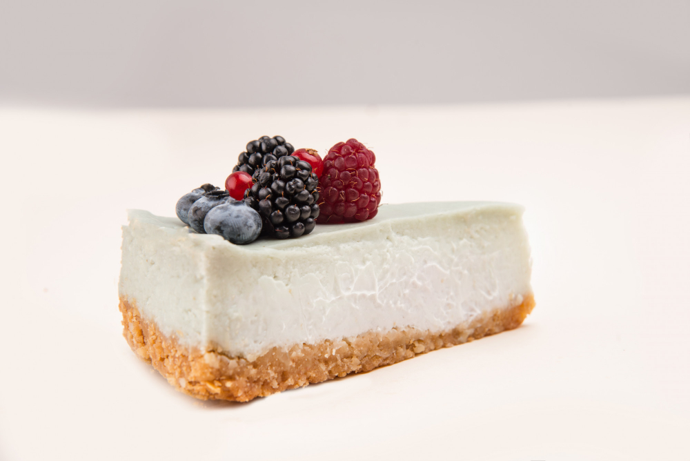

Cheesecake

Image by drobotdean on Freepik
Description
If you are looking for the best and easiest cheescake recipe, you have come to the right place! This easy to follow recipe will quickly become one of your go to recipes.
Ingredients
- 1 3/4 cups HONEY MAID Graham Cracker Crumbs
- 1/3 cup butter, melted
- 1 ¼ cups sugar, divided
- 3 (8 ounce) packages PHILADELPHIA Cream Cheese, softened
- 1 cup BREAKSTONE'S or KNUDSEN Sour Cream
- 2 teaspoons vanilla
- 3 eggs
- 1 (21 ounce) can cherry pie filling
Steps
- Preheat oven to 175 degrees C.
- Mix graham crumbs, butter and 1/4 cup sugar; press onto bottom of 9-inch springform pan.
- Mix cream cheese and remaining sugar until blended. Add sour cream and vanilla; mix well. Add eggs, 1 at a time, beating gently after each addition just until blended. Pour over crust.
- Bake for between 1 hour to 1 hour and 10 minutes. Remove rim and set in frisge for 4 hours.
- Top the chessecake with as desired when serving.